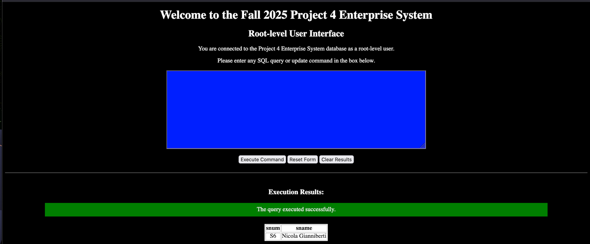

Project Description
This project is a three-tier web application deployed on Apache Tomcat. The system authenticates users against a credentials database and routes them to role-based interfaces (such as root, client, data entry, and accountant). Server-side servlets handle requests, execute SQL commands, and perform insert operations using prepared statements. The application also supports running stored procedure reports through callable statements, demonstrating a complete workflow from web UI to database execution.
Skills Learned / Used
- Three-tier architecture: browser UI → servlets/JSP → MySQL database
- Role-based authentication and user routing
- Server-side programming with Java Servlets and JSP
- PreparedStatements for secure data entry operations
- CallableStatements and stored procedures for generating reports